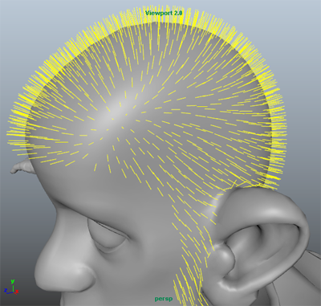
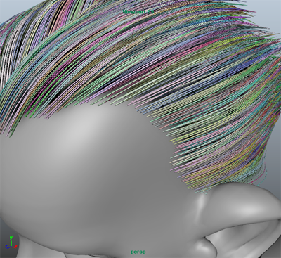

创建成束贴图
您可以使用“成束”(Clumping)修改器，通过模拟真正的头发随其生长而成束的方式来细化修饰。“成束”(Clumping)修改器将创建一个贴图，用于将指定区域内的曲线聚集为逼真的发束。
创建“成束”(Clumping)贴图
- 禁用“自动更新预览”(Update Preview Automatically)并清除预览。
- 在“XGen”窗口中，单击“修改器”(Modifiers)选项卡。
- 在“修改器”(Modifiers)下，单击
 。
。
- 在“添加修改器窗口”(Add Modifiers Window)中，单击“成束”(Clumping)：。
- 在“成束修改器”(Clumping Modifier)下，单击“设置贴图”(Setup Maps)。
设置“成束修改器”(Clumping Modifier)时，创建点贴图以指定成束导向的位置。成束导向会将周围的样条线拉到一起形成发束。
- 在“生成成束贴图”(Generate Clumping Maps)窗口中，将“密度”(Density)设置为 6.0。
此值将设置在给定区域多边形网格曲面上创建的点的数量。
- 单击“生成”(Generate)以创建 (.xuv) 文件点贴图。
贴图将存储在描述的“点目录”(Points Dir)中。
黄线用于标识贴图的点位置。
在“生成成束贴图”(Generate Clumping Maps)窗口的“贴图”(Maps)部分中，设置 XGen 用于在曲面上生成成束导向的控制贴图。如果您的描述使用“区域贴图”(Region Map)，将自动启用“使用控制贴图”(Use Control Maps)。这将确保束无法与“区域贴图”(Region Map)定义的边界相交。
在本示例中，使用了“区域贴图”(Region Map)，因此“使用控制贴图”(Use Control Maps)处于启用状态。
- 单击“保存”(Save)。
成束贴图将修改头发样式。您可以通过启用“颜色预览”(Color Preview)来查看贴图影响样条线的方式。
- 在“修改器”(Modifiers)下的“选项”(Options)旁边，启用“颜色预览”(Color Preview)。
属于每束（和成束导向）的样条线现在以相同颜色显示。您也可以仅查看成束导向。
 - 在“选项”(Options)下，单击“预览导向”(Preview Guides)以仅查看成束导向。
通过设置“成束比例”(Clumping Scale)值，可以进一步修改成束贴图影响样条线的方式。这使您能够指定沿其长度应用于样条线的成束数量。
- 在“成束修改器”(Clumping Modifier)下，展开“束效果”(Clump Effect)。
- 在“束比例”(Clump Scale)渐变中，选择并拖动“R”（根）和“T”（尖端）标记来改变成束贴图的效果。
创建第二个成束贴图以进一步细化头发样式很常见。创建第二个贴图时，将点贴图的“密度”(Density)设置为第一个贴图“密度”(Density)值的两倍。
使用所需的渲染器渲染场景。请参见着色和渲染 XGen 基本体。